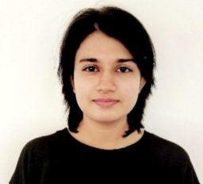
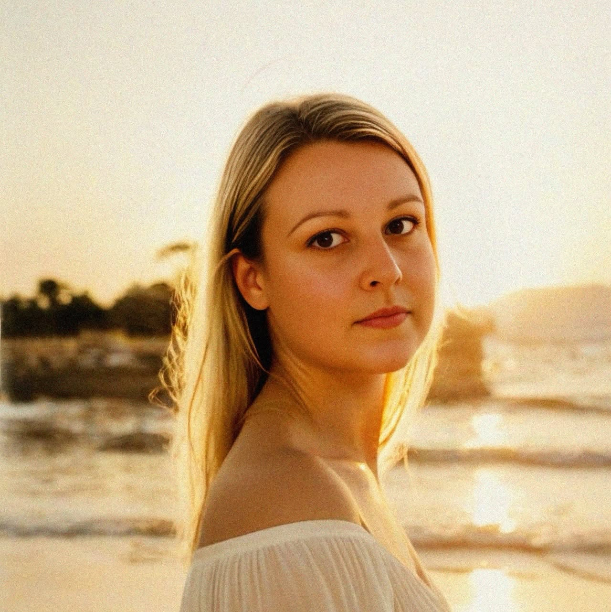
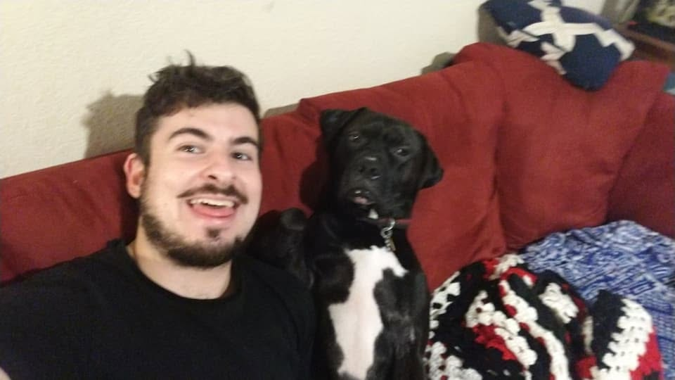
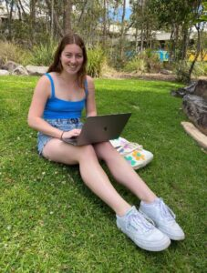

Chemical information from complex systems.
The Nanobioanalytical Lab develops advanced analytical technologies combining spectroscopy, chemometrics, artificial intelligence and complementary chemical analysis to solve emerging challenges across health, materials, environmental science and advanced manufacturing.
Analytical chemistry for emerging challenges.
Our research integrates advanced chemical measurement with chemometrics and artificial intelligence to develop rapid, robust and translatable analytical solutions.
.png)
AI-Enabled Rapid Analytical Diagnostics
We combine spectroscopy, chemometrics and machine learning to develop rapid analytical platforms for chemical identification, classification, quantification and decision making at the point of need.
.png)
Circular Materials and Polymer Analytics
We develop analytical methods for recycled and manufactured polymer systems, including polymer identification, feedstock qualification, contamination detection, degradation assessment and circular-economy decision making.
.png)
Emerging Pharmaceuticals, Peptides and Sports Integrity
We develop rapid analytical strategies for emerging pharmaceuticals, peptide-based agents and performance-modifying compounds, integrating screening technologies with complementary confirmatory analysis.
.png)
AI-Guided Functional Materials and Biointerface Engineering
We combine materials chemistry, advanced characterisation and data-driven modelling to design functional materials and biointerfaces with controlled chemical, antimicrobial and antifouling properties.
From chemical measurement to analytical evidence.
Our research combines complementary instrumentation with quantitative analysis, chemometrics, machine learning and rigorous validation.
Translating analytical science into real-world decisions.
Plastics and the Circular Economy
Rapid analytical methods for polymer identification, recycled feedstock quality, contamination, degradation and materials recovery across circular-economy and advanced-manufacturing systems.
Emerging Drugs and Sports Integrity
Analytical capability for rapidly evolving pharmaceuticals, peptides and performance-modifying substances, with relevance to emerging sports-integrity challenges approaching Brisbane 2032.
Functional and Antimicrobial Materials
Understanding material-biology interactions and developing functional surfaces and materials to control microbial adhesion, biofilm formation and biofouling.
The Chapman Group
Our researchers span analytical chemistry, spectroscopy, chemometrics, artificial intelligence, polymer science, antimicrobial materials, forensic chemistry and biomedical analysis.






Research outputs from the group.
Selected recent publications illustrate work across AI-enabled diagnostics, spectroscopy, microplastics and circular materials.
Artificial intelligence-enhanced near infrared spectroscopy for rapid diagnostics of infectious diseases
Plastics and persistent chemical contaminants in food waste: challenges for the circular economy
Analysis of marine plastic fragments using a portable near-infrared instrument
Medical plastic waste, analytical characterisation and circular-economy recovery
Research connected across people, projects and publications.
The group operates across interconnected research programmes. This network highlights selected relationships arising from shared publications, research themes and active projects.
Solid cyan connections indicate selected close collaborations associated with shared publications or strongly overlapping projects. Other connections show broader project and programme relationships. The network is a schematic representation of current group activity rather than a bibliometric analysis.
Collaborative research at scale.
Our research is strengthened through major collaborative programmes, institutional partnerships and professional scientific networks.
Solving Plastic Waste CRC
Collaborative research across polymer analytics, plastic waste, microplastics, resource recovery and the transition towards a circular economy for plastics.
Additive Manufacturing CRC
Research across advanced manufacturing, polymer characterisation, recycled feedstocks and next-generation materials.
Queensland Brain Institute
Collaborative translational research supporting emerging analytical, biosensing and biomedical applications.
Royal Society of Chemistry
Scientific engagement and collaboration across analytical chemistry, materials chemistry and chemical measurement.
From measurement to evidence.
Analytical signals are only valuable when they provide chemically meaningful, reproducible and defensible information. We integrate instrumental measurement, experimental design, quantitative analysis and data science to convert complex chemical signals into evidence.
Work with The Chapman Group
We welcome enquiries from prospective Honours and PhD researchers, postdoctoral researchers, visiting scientists, academic collaborators and industry partners interested in analytical chemistry, spectroscopy, artificial intelligence, circular materials, pharmaceutical analysis, antimicrobial materials and functional materials.